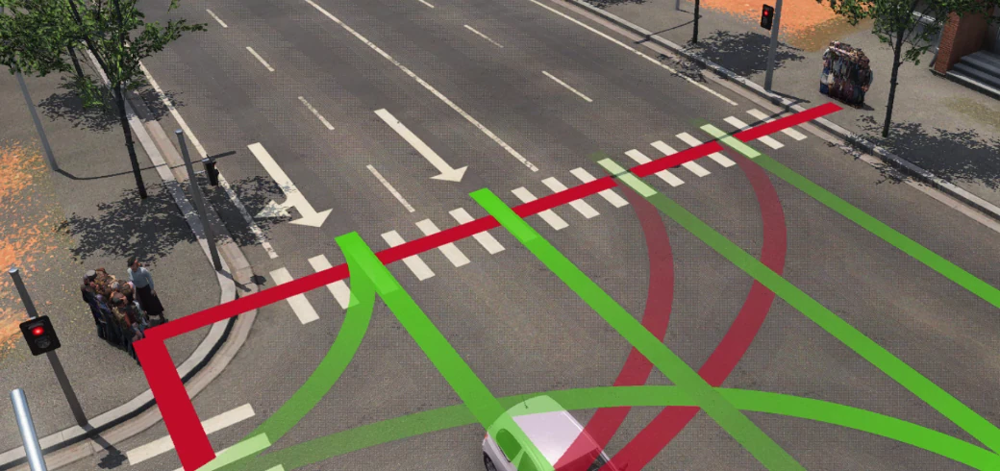
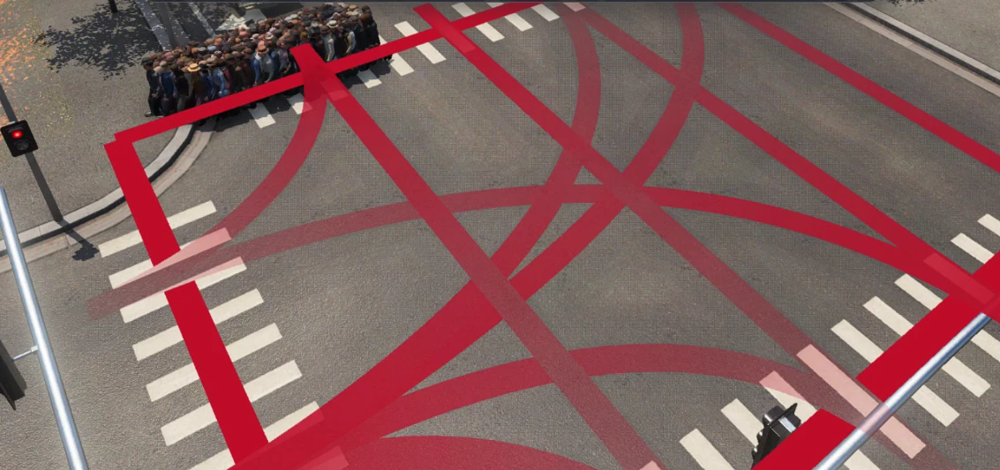

Bug Fix - Crosswalk Queue
Pedestrians stuck at traffic lights for months, while the light never shows its walk phase: this mod finds such crossings and nudges the light so they cross.

Unstick Crosswalks
Setting: Unstick Crosswalks · On by defaultAbenberg: the same crossing before and after a nudge, with the lane overlay of the game's Crossing window (green lanes may go).

- 1The crowd at the kerb. Some have waited here for months.
- 2The crosswalk stays red: the light serves only its car lanes.

- 1After the nudge, the crowd crosses.
Why
At a crossing with traffic lights, pedestrians waiting at the kerb can stop counting as waiting for the walk phase. The light keeps serving its car lanes and never shows the walk phase, so a crowd builds up and stands there for months. Commuters among them never reach work, and nearby industries lose their worker boost.
Turning the walk phase's Allow Skipping off doesn't help. Editing the phase in the crossing's window clears it for a while: the crossing is rebuilt, the pedestrians queue again, and the walk phase comes on.
What it does
The mod spots such a crossing: walkers standing at the light far longer than a full light cycle, which a working light never lets happen, while its walk phase hasn't come on. It then sends the light its own settings again, unchanged, as the crossing's window does when you edit it. The crossing is rebuilt, the pedestrians queue again and cross.
How to use
- Subscribe and turn the mod on for your save.
- That's all: it watches every crossing with traffic lights by itself.
Good to know
- The light's phases stay exactly as they were. The game only marks them as edited, as it does when you edit them yourself.
- A crossing is nudged at most every two weeks of game time, and one that jammed before is watched closely.
- Busy crossings where nobody is stuck are left alone: a walk phase skipped because nobody waits for it is normal.
- It also gets a light moving again that has frozen in one phase.
- It keeps nothing in your save, so it can be removed at any time, for example once the game itself is fixed.
Settings
Choosing a save's mods: the gear next to Bug Fix - Crosswalk Queue → Settings. Each save keeps its own choice. Off turns a feature off completely.
| Setting | Default | What it does |
|---|---|---|
| Unstick Crosswalks | On | When pedestrians wait at a traffic light whose walk phase never comes on, the light is nudged so they cross. |
| Logging | Off | Writes the mod's messages to the game log (stdout.txt), for bug reports. |
More
Compatibility
Works with any map and any other mod. Tested on game build 40444, where the game bug is still there.
Changes
1.1: Nudges only crossings where a walker has waited longer than a full light cycle, so busy crossings with nobody stuck are left alone.
Earlier versions
- 1.0: First release.